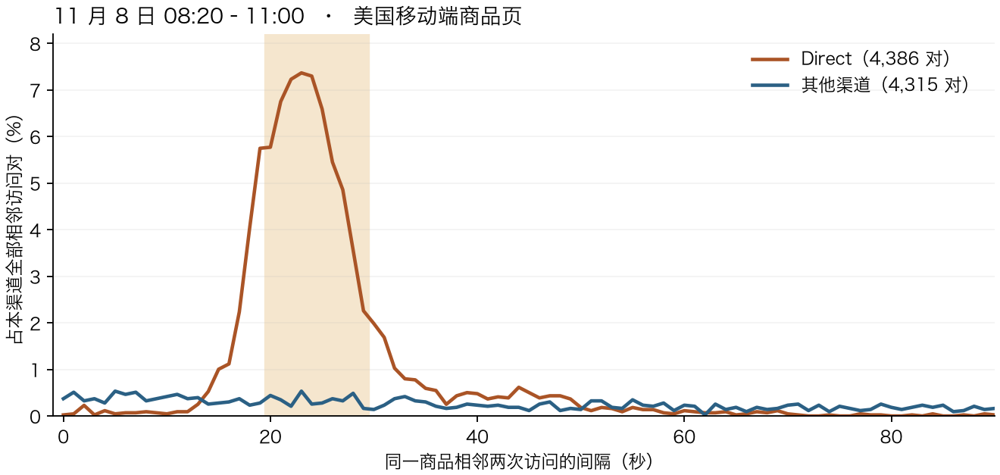
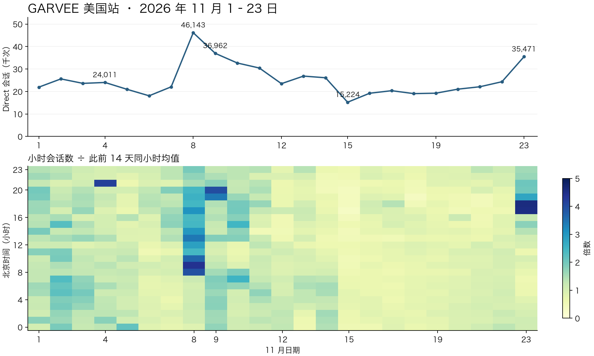

观测期 2026 年 11 月 1–23 日 · 北京时间
两次 Direct 高峰出现了有规律的商品页访问
11 月 8 日早间和 9 日晚间，高度疑似有自动化程序参与访问。同一商品被不同客户端接连打开，间隔大量集中在 20 至不足 30 秒。4 日证据有限，23 日高峰没有复现同等规模的节奏。
同一商品，约 23 秒后又被打开
在 11 月 8 日 08:20–11:00，限定美国移动端、从商品详情页进入的会话。把同一商品路径的访问按首次浏览时间排序，取匿名客户端标识不同的相邻两次，组成一个访问对。


Direct 有 2,505 / 4,386 对相隔 20 至不足 30 秒，覆盖 1,766 个商品路径。同期其他渠道为 147 / 4,315 对。
把 8 日发现的区间固定后，用同一规则检查 9 日晚峰，1,380 / 2,917 对再次落入该区间，覆盖 955 个商品路径。
如果只是人多、商品热门，会出现同样的节奏吗？
对每个日期、每个渠道分别做 199 次随机重排。在每一分钟内，保留实际到达时刻、每个商品的访问次数，以及商品与匿名客户端的对应关系，仅打乱它们与该分钟内具体时刻的配对。每次从头计算相邻访问间隔。
| 峰段（北京） | Direct 实测 | 重排中位数 | 199 次重排范围 | 同期其他渠道实测 |
|---|---|---|---|---|
| 11/04 21:20–22:00 | 18.6%11 / 59 | 11.9% | 0.0–23.7% | 3.7% |
| 11/08 08:20–11:00 | 57.1%2,505 / 4,386 | 13.8% | 12.5–15.1% | 3.4% |
| 11/09 19:20–21:00 | 47.3%1,380 / 2,917 | 11.4% | 9.8–12.7% | 11.6% |
| 11/23 17:05–19:00 | 2.1%40 / 1,881 | 1.1% | 0.4–1.8% | 2.6% |
8 日和 9 日的实测值分别比重排中位数高 43.3 和 35.9 个百分点。保留流量高峰和每分钟的商品热度后，199 次重排均未达到这两天的实测值。
表中范围是本次模拟的最小值至最大值。4 日只有 59 对，实测在模拟范围内。23 日实测略高于模拟上沿，绝对差约 1 个百分点（相对中位数），也低于同期其他渠道。9 日其他渠道同样存在时间聚集，实测 11.6%，重排中位数 4.8%。
这些访问有多少走到了下一页？
8 日峰段，美国移动端产生了 7,906 个从商品页进入的 Direct 会话。7,487 个只记录一页，首末事件相隔不足 10 秒，全程没有记录到滚动、加购、开始结账或购买。
| 会话行为 | 前两个周日 Direct | 11/08 Direct | 11/08 其他渠道 |
|---|---|---|---|
| 会话数 | 684 | 7,906 | 7,500 |
| 单页、短时且无上述互动 | 74.1% | 94.7% | 59.6% |
| 至少浏览两页 | 15.6% | 3.1% | 27.5% |
| 加购、开始结账或购买 | 1.17% | 0.09% | 3.03% |
历史对照合并 10 月 25 日和 11 月 1 日的相同时段，按总会话数计算比例。首末事件间隔只反映被记录的行为，访客实际离站时间未知。
| 指标 | 前 14 天同时段 | 前两个周日同时段 | 11/08 |
|---|---|---|---|
| 会话数 | 2,621 | 2,271 | 10,412 |
| 跳出率 | 44.5% | 58.9% | 61.3% |
| 平均访问时长 | 66.5 秒 | 52.1 秒 | 31.2 秒 |
| 访问深度（页/会话） | 1.44 | 1.26 | 1.13 |
| 从商品详情页进入 | 73.2% | 67.1% | 90.9% |
| 商品详情页占全部浏览量 | 68.1% | 70.0% | 86.9% |
8 日是日峰，23 日是小时峰
在 11 月 1–23 日的 552 个小时中，筛选会话量达到第 99 百分位、且至少为前 14 天同小时均值两倍的时段。6 个小时达标，分布在 4、8、9、23 日。8 日全天 Direct 有 46,143 次会话，较前一天增加 109.1%。23 日 17 时有 4,320 次，是观测期内最高的一小时。

查看 11 月 8 日前后两周的全天指标
| 全量 Direct | 10/25–11/07 | 11/08 | 11/09–11/22 |
|---|---|---|---|
| 会话数 | 20,498 | 46,143 | 24,076 |
| 跳出率 | 48.32% | 55.38% | 47.84% |
| 平均访问时长 | 60.9 秒 | 35.5 秒 | 61.2 秒 |
| 页/会话 | 1.38 | 1.19 | 1.29 |
后两周包含 9 日晚峰。若用此前两个周日的全天作为基线，跳出率为 60.56%，高于 8 日全天的 55.38%。单看跳出率，判断会随比较时段变化。
能判断自动化特征，暂不能估算 bot 占比
数据支持的结论
8 日与 9 日同时出现大范围、窄间隔的商品访问，且访客极少继续浏览或购物。简单的随机到访模型难以解释这一组合，自动化商品访问是优先解释。4 日和 23 日的证据不足以作出同样判断。
仍可竞争的解释
定时链接预览、营销系统自动打开页面、采集端重复上报，都可能产生规律事件。服务端请求时间、跳转来源、埋点去重记录和当时生效的清洗规则，能进一步区分这些机制。
57.1% 的分母是相邻访问对，94.7% 的分母是特定峰段的商品落地会话。估算全站 bot 会话占比，还需要独立标注样本和误判率校准。
数据来源与检验假设
来源为 GARVEE 美国站 Google Analytics 4（GA4）会话报表和 BigQuery 事件导出。Direct 采用站点正式会话渠道分组，表示归因到直接来源的会话。行为检验独立于平台的机器人标签。数据提取于 2026 年 11 月 24 日；所有窗口均使用北京时间，含起点、不含终点。
同一路径的连续到达按首个页面浏览的微秒级事件时间排序。只保留相邻匿名客户端标识不同的访问对；一个会话可以参与两个访问对。20 至不足 30 秒的区间在 8 日数据上发现，9 日及另外两个峰沿用相同条件复核。199 次重排检验的假设是同一分钟内具体到达时刻与商品、客户端可以互换。结果刻画偏离该假设的程度，无法直接给出访客身份的概率。
GA4 跳出率按未互动会话数除以会话数计算；访问深度为页面浏览量除以会话数。小时指标为同一粒度的报表合计，行为明细则按会话开始时间归入窗口。